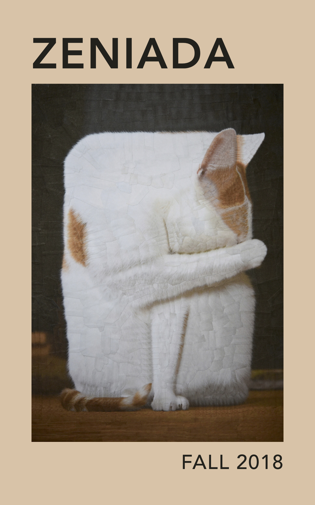
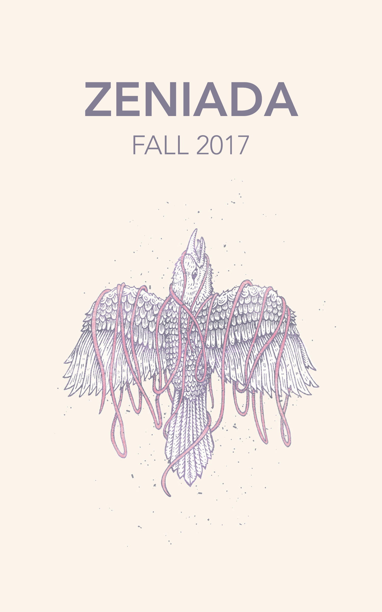
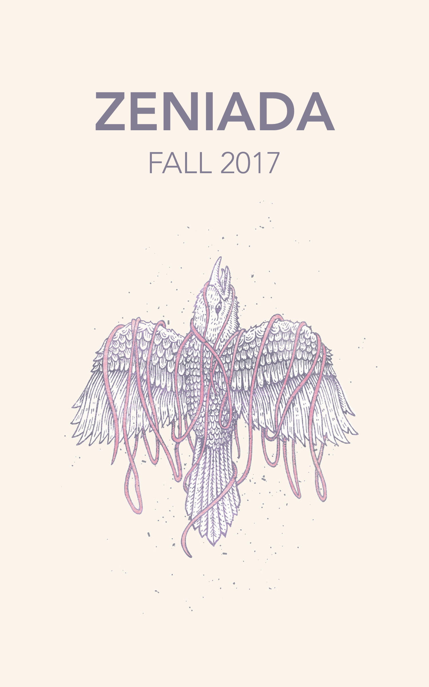

ZeniadaSpring 2019
Waterways
Wavering headlights
and you: the driver, deer, and
aftermath. And you:
haloed and looking
away and away in the
high beam brightness. High
way past the lake. Past
the power station. Past the
side road home. High school
teacher passes us
in her vehicle and for
a moment we are
people that we don’t
know anymore. You brake. The
bridge rocks beneath the
wheels, against the warm
underbelly of the car.
You pretend to steer,
but we both know that
we’re going wherever the
water wants us to.
Mother
Said we buried the fish here.
It looked more rock than animal:
something misplaced. Something
slow-earth washing away to rain.
There’s a sinkhole now: mouth marking
where the water wanted its own back.
We couldn’t oblige, of course, couldn’t ask
mother which plant was growing tall from decay.
(Fireweed, glasswort, self-heal, trembling
aspen, cattail, goatsbeard, oxeye daisy?)
Instead, we carried the riverbank home
and watched its lifeblood lap closer
and closer to our feet. We heard the water
promise that one day, we would be hers.
We would be hers and know
the true mother of life.
Jade Riordan is a poet from the Northwest Territories, Canada. She is currently an undergraduate student at the University of Ottawa. Find more of her poetry in Green Blotter, HOOT, The Maynard, Outrageous Fortune, and elsewhere.
Next | Table of ContentsUgly Americans
Theresa Doolittle is currently in her final year at the University of Pittsburgh, where she is studying Nonfiction Writing and Communications. Originally from Boston, Theresa is an avid photographer and intrepid traveler, which culminates in her writing and art. She has a forthcoming publication in Sidereal Magazine.
Previous | Next | Table of ContentsHuman Ecology
i. "sometimes, like now,"
you body forgotten
wisp, her
whisper the tongue onto
paleolithic monumental
stone. age
ii. "we must"
you body forgotten
can no long, her
speaking to her mother
land. it moves:
lip #1 (upper) &
lip #2 (lower) &
limb #1 (brachium, right) &
limb #2 (brachium, left) &
total: 4 (some of limbs for god.)
iii. "speak of"
you body forgotten
sever(e), her
word & her limbs. there
are phonemes of steel
still lodged beneath her ribs
so heave(n)(l)/y
iv. "provenance."
you body forgotten
elite, her
elision:
((hertongueherdirtherbloodherlimbsherthoughtsher-
breathsherwillherdeepecologyherselveshurt)):
"her wounds"
"her wou
"her
lines on a foredoomed shore.
Mitali Sharma, a St. Louis native, is a freshman studying English and Sustainable Development at Columbia University in New York. "Human Ecology" is a reflection on the relationships between the political and the primal, language and the body, and female generational trauma and a lost ecological identity.
Previous | Next | Table of ContentsTo a Boy I've Never Met Before
At night, I count the squalls of sirens, and do not think of
who has called the ambulance, do not think of who is dying,
do not think of heart attacks and palms cut open with
blades and blood on linoleum. I think of you, and what you
called me, how it cut me open.
Cunt.
The worst word you can think of is the place that you came
from.
That blessed searing bastard thing, a thousand ships gone,
and you still can’t help but hate it.
73 dollars on vodka cranberries and still it’s out of reach,
waste of time, don’t want it anyway, 4 a.m. can’t help but
hate it.
Cunt.
Not to my face, I wasn’t there, but I bet the boys beside
you laughed and I bet you felt good about it.
I don’t fll spaces like you think I should. I kissed too many
of your brothers and loved too few, so fuck her, she’s crazy,
don’t want it anyway, laugh like you mean it, like it might
stop the rage, like it might save you.
Cunt.
I’d like to say I wore that pink coat of arms like a soldier
and burned alive like Joan of Arc and stood with shoulders
back, carved the letters in my fesh and wore the word like
a new tattoo.
But at night, I do not think of ambulances. I count the
sirens, count the shadows on the ceiling, count the bare-
chested boys, count the bleeding cuts and the beats of my
heart. There is a soft pulse between my legs, and it seems
to speak, it says, I am, I am, I am.
Katie Ward is originally from Falls Church, Virginia, and currently studies Creative Writing and Political Science at Vanderbilt University. She writes fiction and poetry, and her work has also appeared in The Vanderbilt Review.
Previous | Next | Table of ContentsThe Lover I & II

Ángel Quel Sanz is a fourth-year student at Universitat de València in Spain.
Previous | Next | Table of ContentsVictim, n.
A living creature killed and offered as a sacrifice to some deity or supernatural power.
Creature: killed, living
Or: power.
Sacrifice, n. - a sacrifice to some power
Sacrifice, v. - as in "killed," "living"
A game was played at 5mph, the windows of the car rolled down, my father instructing me to "shhhh!" back there — we were driving past Quiet Rock. I hushed myself at its vigil, waiting for the moment the car drifted past the brown stone beside the mailbox. The game was sacred. It meant we were home, that we’d arrived. My father said the day now belonged to us. To keep silence to acknowledge the stone bleached by sunlight beside the mailbox. But a stone is not a creature, but a marker. It whispers, "This is where." To keep silent in response to silence, to remain frozen in the company of a witness — this was sacred. And I was the last to look at it, pulling into the driveway.
As in, there is an after life: a thing that is killed yet still living
As in, a creature offered: a thing for some deity
As in, this is sacred: a thing as a sacrifice,
As in, you have done well: a thing still standing,
As in, it is you beside the mailbox.
Sophia Fornwalt was born and raised in Louisville, Kentucky and is studying Philosophy & English Literature at university. Her work contemplates the relationship between memory, the self, and childhood. This is her frst publication and is dedicated to her grandmother Patricia.
Previous | Next | Table of ContentsSunday
Quaking claps shuffle off to make room
for words that could save a better man.
A child’s voice, possessed, as
syllables sing and singe the soul.
Toeing the line between goddess and heretic
I resist the urge to dance, cry, faint
as you carve your namesake into the pew.
Claire Goudreau is a freshman at Johns Hopkins University from Summit, New Jersey. She is currently majoring in International Studies and is accepting votes for what her minor(s) should be.
Previous | Next | Table of ContentsGrowing Things
I was eager to pick mushrooms
when they bloomed beneath
the lilacs in the backyard.
They were safe, dad said, as if
safety was out of the ordinary, so
we fried, salted, and ate them.
I didn’t think of mushrooms
when we found baby mice.
Me and my friend, who bends down,
shifting orange peels and egg shells aside.
I knew we seemed harmless to them, because
they said nothing to us,
as though we could not use our hands
to strain out the essential knowledge
of their flesh.
In face of my friend, there is a question.
They were white against black soil.
We run to fnd pumpkin seeds
to lay beside them,
growing things.
Carver Bain is a writer, filmmaker, actor, and artist. He is currently in post production for How To Care For Strangers, a surreal, festival-bound short film about leaving childhood behind. If you wish, you can find out more and read more of his writing at www.carverbain.com or on Instagram @carver.jpg.
Previous | Table of Contents
 
